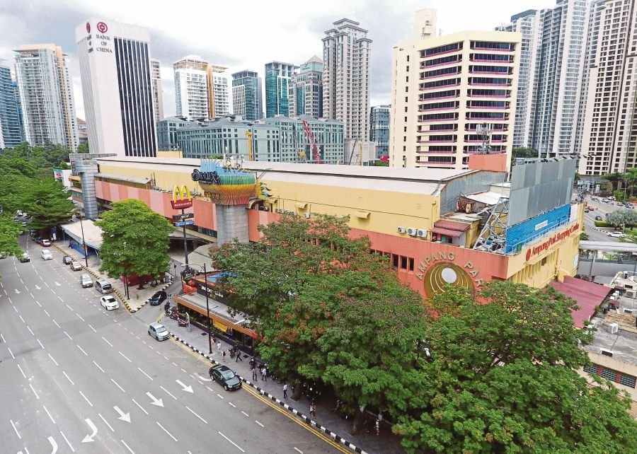

Malaysia
Ampang

Ampang's history is closely related to the history of Kuala Lumpur. In 1857, Raja Abdullah, a representative of the Selangor Sultanate, opened up the Klang Valley for tin mining. 87 Chinese miners from Lukut went up the river Klang and landed at Kuala Lumpur, then walked for a few miles through a jungle path to Ampang and began prospecting in the Ampang area. However, within a month 69 of the 87 miners had died due to the malarial conditions of the area, and Raja Abdullah sent another 150 men to continue the work. Eventually the death rate dropped, and the first tin was exported in 1859. The success of tin mining at Ampang led to the development of Kuala Lumpur. The name "Ampang" means "dam" in Malay and the place was named in reference to the miners' dams.
There are many pre-war buildings along Ampang Road. The Eng Choon Assembly Hall on Ampang Road for example was built in 1930. Its inner structure was rebuilt to support a taller building within. Eu Tong Sen, a leading businessman in the early 1900s, built a villa in 1935 on Ampang Road.The same location was used by the British government as a military base. Over time it was renovated and reopened as the National Art Gallery on 27 August 1958 and much later refurbished to become the Malaysia Tourism Centre (MaTiC). Eu Tong Sen also owned a tin mine in Ampang which was the first to install an electricity generator in 1914.
More Info
Top 3 Things You Should Do In Ampang
Saga Hill Trial
For the more adventurous (and stronger) hikers, we can hike to the Bukit Saga waterfall.This spot is one of KL's finest to flex and stretch those lazy muscles for upcoming marathons, trail running, hikes or just a normal stroll on a Saturday morning.Zoo Negara
The Zoo Negara features about 400 species of Malaysian and exotic mammals, reptiles and birds. Of these, the majority are fish and bird species while about a hundred are mammals and the reptiles. The National Zoo is situated 13 km from the centre of Kuala Lumpur. Its aquarium "Tunku Abdul Rahman Aquarium" is a very popular attraction. It displays over 80 species of aquatic animals, both marine and freshwater, including invertebrates.The Garage KL
TheGarage.KL is a hangout place where you can do many things. you can shop, you can eat, you can send your car to the workshop on the groundfloor, you can even get a haircut!
Best Place To Eat In Ampang
Zaini Satay
Ampang locals should consider themselves lucky, because this stall is legendary among satay lovers. Mr. Zaini of Zaini Satay is the grandson of the founder of Majid Satay, also dubbed as the “King of Satay”. These well marinated meat sticks are so skillfully grilled, that people from all over KL come to Ampang just for this.Uncle Aru’s Tandoori Hut – Tandoori Chicken
Running for about 40 – 50 years till today, Uncle Aru’s Tandoori Hut serves one of the juiciest chicken tandoori. What makes this place so good is the experience and skill that the cooks have honed throughout the years. Charred, spicy and flavourful – eating this tandoori chicken is worth the trip to Ampang.Mak Jah Corner – Kuih
From a small roadside stall selling Kuih, to now having its own corner lot – Mak Jah has grown to be Ampang local’s favourite breakfast and tea time spots. This stall is well known for its wide selections of kuih-muih such as: Seri Muka, Tepung Pelita, Onde-Onde and much more. They also serve Malaysian breakfast favourites like: Roti Canai, Nasi Lemak and Mee Goreng.